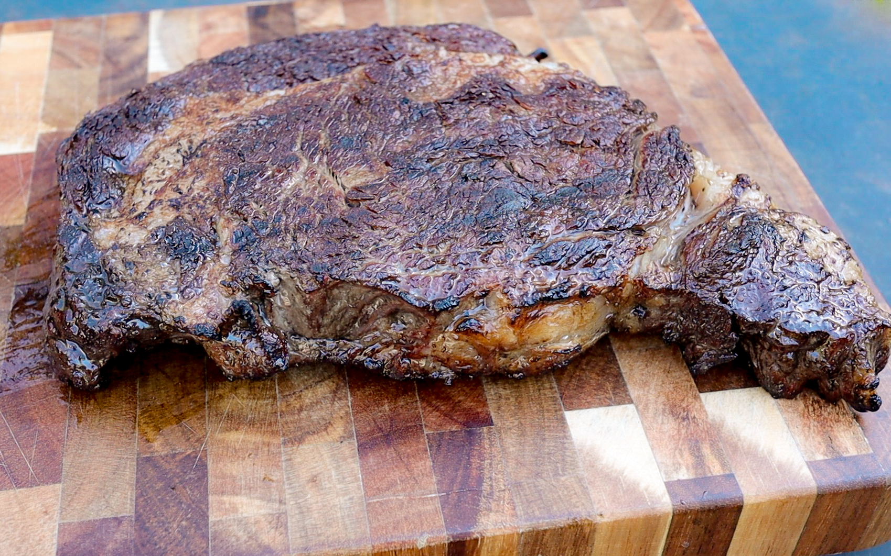

Steak

Description
This recipe is a guide on how to add extra flavor to your steak with few ingredients
and to get the perfect temperature every time. There's not much more to say so lets get
into it.
Ingredients
- Your Cut of Choice(we recommend ribeye for this recipe)
- 3 tbsp unsalted butter
- 2 Sprigs of Fresh Rosemary
- 3 Cloves of Garlic
Steps
- Preheat a pan to medium-high.
- While the pan is preheating rub down your steak with your seasoning of choice but
we recommend only using some salt and black pepper.
- Once the pan is done preheating add a little bit of oil and then place your
steak in the pan.
- Let a sear develop before flipping.
Repeat this step until the outside of your steak is brown, excluding the fat cap.
- Take your pan and place it in an oven preheated to 400 degrees farenheit.
After 10-12 minutes remove the steak from the oven and then from the pan.
Put the pan on high heat again and then place the steak back in the pan along
with your butter, rosemary, and garlic cloves.
Once the butter is melted begin basteing the steak by tilting the pan to one side
and using a spoon to take the melted butter and pour it over the steak.
Continue for 1-2 minutes and then remove the steak from the pan and allow to rest
for 10 minutes before cutting up and serving.